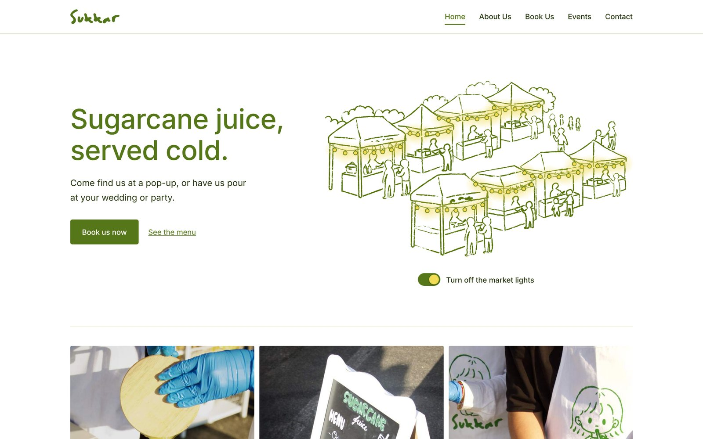
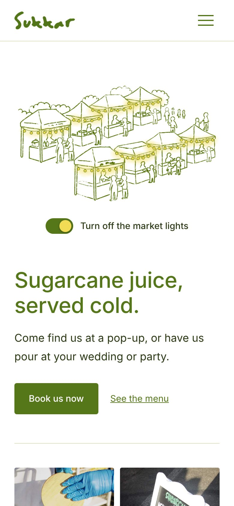
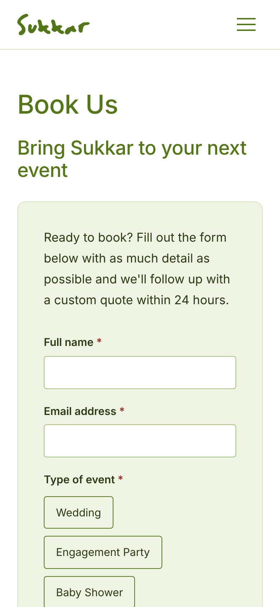
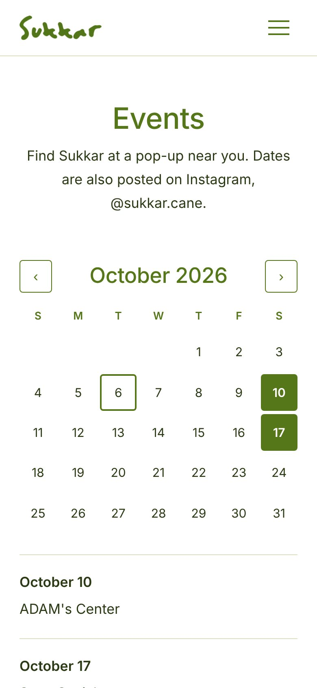
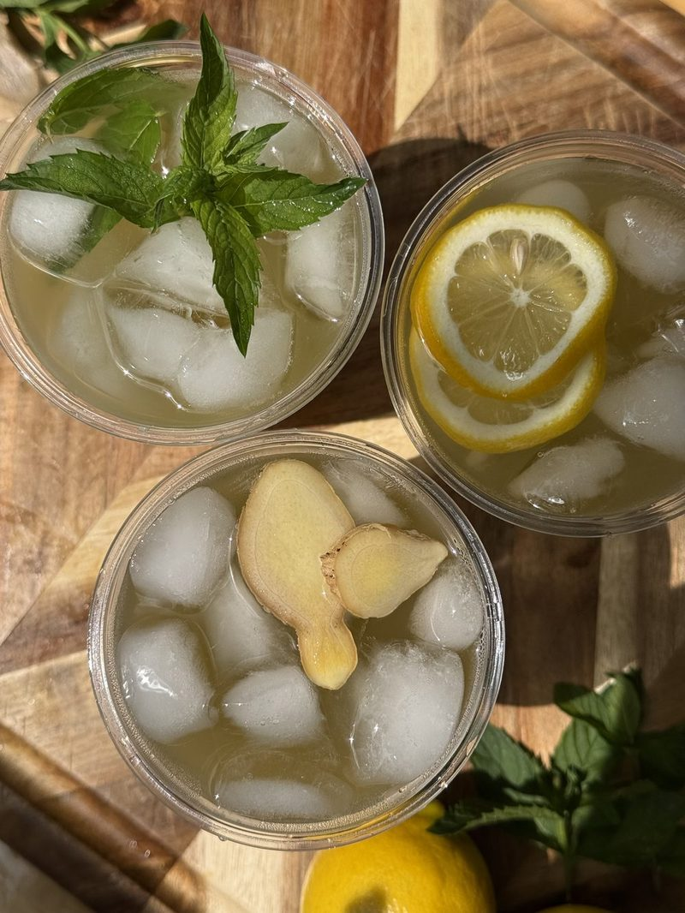
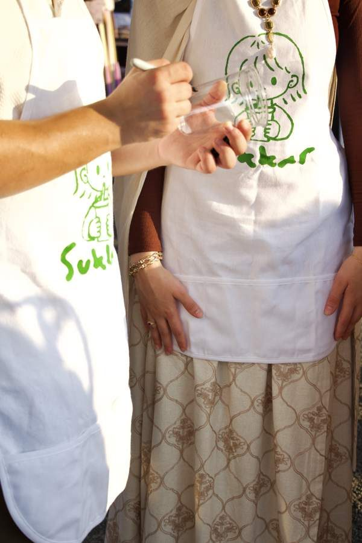
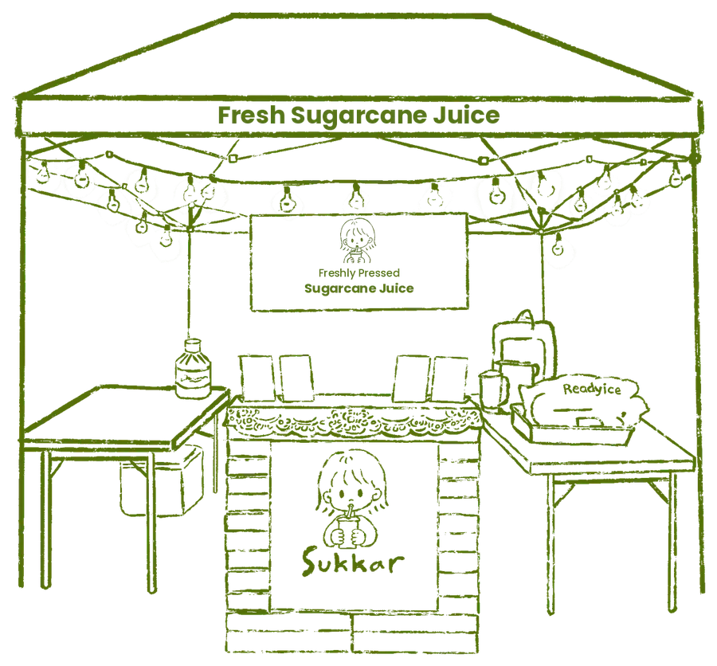

Sukkar: a pop-up that feels like a place.
A hand-drawn website for a sugarcane juice pop-up, built to help customers find the stand and book it for their events.


- Client
- Sukkar
- Services
- Design, development, illustration
- Pages
- Home, About, Book Us, Events, Contact
- Built with
- HTML, CSS, JavaScript, Netlify
The challenge
Sukkar serves fresh sugarcane juice at markets, festivals and private events. Because the stand moves around, customers kept asking the same questions: Where will you be next? What's on the menu? Can you come to my wedding?
The answers were spread across social media posts and direct messages. Sukkar needed one link that answered all of them and made booking an event easy, while still feeling as fun and fresh as the stand itself.
The solution
- Hand-drawn illustrations of the market and the juice stand, with string lights visitors can switch on. It gives the site the same personality as the real booth.
- An events calendar that shows upcoming pop-ups, so regulars always know where to find the stand.
- A booking form for weddings, showers, birthdays and graduations that collects the date, times and event type up front, so every request is ready for a quote.
- Phone-first design: most visitors find a pop-up on their phone, often while they're standing in line, so every page was designed for small screens first.


The outcome
Sukkar now has one link for everything: the menu, the pop-up schedule and event bookings. Instead of answering the same messages over and over, customers find what they need on their own, and booking requests arrive with all the details in one place.



Want a website like this?
Tell me about your business and I'll get back to you within a day or two with ideas and a quote.